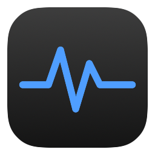
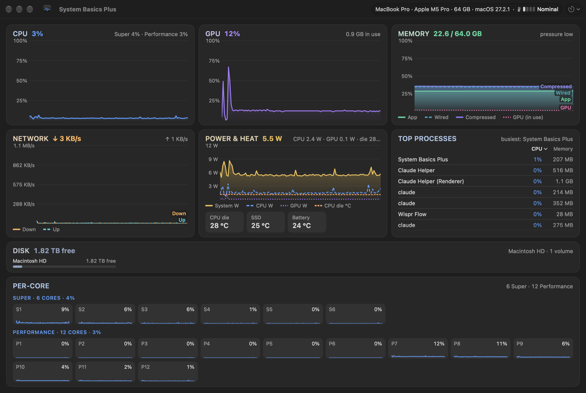
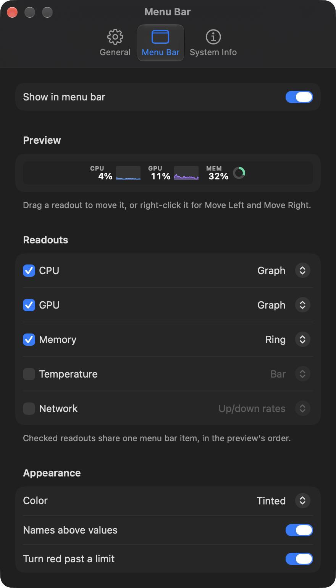

System BasicsA small, quiet system monitor for the Mac. Live graphs for CPU, GPU, memory, network, temperature and power, in a window, in the menu bar and on the Dock icon. Nothing else: no accounts, no ads, and nothing leaves your Mac.
Made primarily as a test of agentic app development on the Mac, to wrap my head around the basic steps involved, but useful enough to share.

Install
Requires macOS 15 (Sequoia) or later.
brew trust --cask tcrowson/tap/system-basics
brew install --cask tcrowson/tap/system-basicsHomebrew 6 and later asks you to trust a third-party cask before installing it; brew trust tcrowson/tap trusts all of these apps at once.
Update
brew upgrade --cask system-basicsUninstall
brew uninstall --cask system-basicsTo also remove its settings:
brew uninstall --zap --cask system-basicsFeatures
The window
- Cards for every metric: CPU, GPU, Memory, Network, Temperature, Power, Top Processes, Disk and Per-core, each with a large history graph. Hover a graph to read the value at any moment.
- Fits any width: cards pack into as many columns as the window allows, from one up to four.
- Collapse or hide any card by clicking its header, or hide it from View ▸ Cards. Hidden cards stop measuring.
- This Mac: a panel with the model, chip, memory, macOS version, uptime, startup disk, displays and battery health. Choose which facts show in Settings ▸ System Info.
- Per-core: one small graph per core, grouped by core type, using the names your chip reports.
- Top Processes: your five busiest processes by CPU or memory, including the work of short-lived helper processes such as compilers.
The menu bar

- One menu bar item, your readouts: choose any of CPU, GPU, Memory, Network and Temperature, in the order you like.
- A style per readout: text, history graph, bar, per-core bars (CPU), ring (memory), or up/down rates and graph (network).
- Tinted or monochrome: tinted uses a color per metric; monochrome matches the menu bar's own icons on any wallpaper.
- Turns red past a limit: CPU or GPU above 90%, memory above 85%, temperature above 85 °C.
- Click for details: current values for every metric, the top five processes, and quick access to the window, refresh rate and Settings.


Light on resources
- Measures only what is on screen, slows down when the window is hidden, and pauses when nothing is showing.
- Refresh every 0.5, 1, 2 or 5 seconds; keep 60 to 600 samples of history.
- Follows your Mac's light and dark appearance.
FAQ
Does it collect any data?
No. It has no network code at all: every reading stays on your Mac.
Why don't I see every process in Top Processes?
macOS only lets regular apps read your own processes. System services that run as root are not listed.
Which Macs does it support?
macOS 15 or later. It has been developed and tested on Apple silicon; temperature and power sensors differ between chips, and a reading the Mac doesn't provide is simply left out.